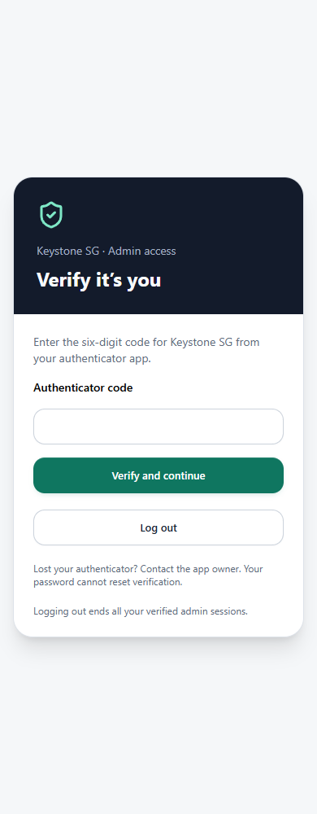

If you want to do this in your own app, start small. Protect one harmless admin feature properly, prove that it cannot be bypassed, then apply the pattern to the rest of the app.
This guide explains what to ask the Base44 Builder to build, what you need to configure yourself and what a passing result looks like. It is for an app owner working with the Builder or a developer. You do not need to understand every line before starting, but the finished security implementation needs technical review.
Owner-approved authenticator verification before administrative data access. Base44 continues to handle the primary login. This is custom application security, not a native MFA toggle, a complete downloadable MFA library, or an independently certified implementation.
Before you start
- Access to edit the app, deploy backend functions and manage secrets. Confirm availability in your current plan; do not assume it from a screenshot of an SSO setting.
- A separately protected workspace login and a known owner account. Your existing Google/Microsoft MFA may already provide that workspace protection.
- A code checkpoint and recovery plan. Use synthetic data and separate test accounts. An undistributed app can be tested in place; an app already serving people needs a controlled release plan.
- An authenticator app that supports TOTP. For phishing resistance or organisation-wide identity policy, assess a managed provider/passkey solution first.
Use Base44’s current SSO documentation to check whether the platform already meets your requirement. If it does, avoid adding a second security system unnecessarily. This guide is for cases where you need a separate application-level admin check.
How to use the prompts
Open the app’s Builder chat. Start with prompt 1. Use its read-only mode for inspection; switch to the mode that permits edits when you ask it to implement a later step. Paste one prompt at a time, check the result, then move on. A Builder saying “done” is not the acceptance test.
Never paste encryption keys, activation credentials, QR contents or session tokens into the chat. The prompts themselves contain no secrets. Use the app’s private secret-entry controls for secret values. The examples use names for resources the Builder must create; these are not built-in Base44 MFA APIs.
Keep the instructions beside you
Download the Builder packAll nine prompts (.md) · Test record (.csv)
The pack contains prompts, the example entity, a notes-function reference and a blank test record. It does not contain credentials or a finished MFA verifier.
Step 1 of 9
Check the app before changing it
The first job is to find the paths that already grant access. Include existing functions, not just pages. If the app already has working MFA, the Builder should extend it rather than generate another owner record or encryption key.
Inspect this app and the current official Base44 docs before editing anything. I want owner-approved TOTP verification for administrative operations while retaining the existing primary sign-in methods and ordinary-user access. Report: available backend functions; current SDK and function entrypoint convention; who can edit User fields and roles; every admin data read/write and function; existing direct entity rules; public/private visibility; scheduled jobs; current MFA/SSO features that could already meet the requirement. Identify the owner by the authenticated immutable user ID, never a user-editable flag or an email supplied in a request. Do not output any secret, token or real personal data. Preserve existing working authentication and MFA. Do not change visibility, accounts or access rules yet. Return a file/entity inventory, a small AdminNote pilot plan and exact capabilities you could not verify. Do not describe an untested assumption as supported.
An inventory naming the entities, functions, entrypoint convention and unresolved platform capabilities. No changes to live access yet.
Step 2 of 9
Prove the database operation first
The MFA design needs state changes that cannot both win a race. Base44 documents updateMany, but a bulk-update method’s existence is not an atomicity guarantee. Test the exact condition, response and behaviour your verifier will rely on. SDK entity reference.
Run this inside a hosted backend function. Base44 injects privileged service-role access there; its current documentation does not support using that service role from an external backend. You should not be sent hunting for a local service token. Client/service-role reference.
In this app, implement and run a temporary authenticated owner-only backend probe using createClientFromRequest and platform-injected service-role access. Verify the caller with auth.me and compare the immutable owner ID configured privately. If MFA already works, also require a fresh MFA proof. For a new setup only, the owner-authenticated probe is not a grant endpoint and must never return credentials. Use one uniquely named synthetic record with no account entitlement. Target updates by its exact record ID, unique probe marker and revision. Start with two competing conditional updates and repeat a small bounded number of rounds. Exactly one must update the record per round; read back the expected revision. Report the exact updateMany response shape and distinguish rate limits, network uncertainty and genuine conflicting winners. Settle all outstanding operations before cleanup, including failures. Never fall back to unconditional updates or swallow an uncertain result as a pass. Delete only the record this run created, after verifying its marker; verify deletion. Remove the temporary function afterwards. Keep the encrypted-key and owner records untouched. Provide sanitised pass/fail evidence, deployed version and cleanup result. If tooling is read-only, tell me to switch to edit mode. Do not ask for a local service token.
A sanitised result showing one winning update per round, the stored revision, and successful cleanup. A timeout, 429 response or unknown result is inconclusive. If the required semantics cannot be proven, stop this design here and use a store or managed solution that can provide them.
Step 3 of 9
Build the security records and shared verifier
The important records live on the backend. A profile flag such as mfa_verified=true is not a replacement. Keep every browser operation on the security entities denied and use server-authorised operations to access them.
| Resource | Purpose | Never expose |
|---|---|---|
| AdminMfaAccount | Approval, factor state, encrypted secret, activation and attempt controls | Secret, activation hash or internal counters to other users |
| AdminMfaSession | Hash of the proof, user/login binding, generation and expiry | Raw proof in storage, logs or URLs |
| AdminMfaAudit | Who changed which account and when | OTP codes, seeds, credentials or unnecessary personal details |
The chosen policy is a six-digit code, 30-second steps, a 15-minute activation, eight-hour proof expiry and fresh verification within five minutes for admin-security changes. Five attempts per account per minute and accepted-counter tracking are part of the design. These are configurable choices, not Base44 platform defaults.
Implement the pilot MFA security layer using the app's existing backend conventions. Reuse working MFA if present. Create backend-owned AdminMfaAccount, AdminMfaSession and AdminMfaAudit entities with all direct client CRUD denied. Enforce exactly one account per immutable user ID; duplicates or invalid state fail closed. Account fields must cover user ID, pending/enrolling/active/revoked state, encrypted TOTP secret, activation hash and expiry, enrolment login binding, factor generation, revision, accepted TOTP counter, attempt count/window, approver and timestamps. Session fields must cover proof hash, user ID, validated login-token binding, generation, issued/expiry times and revoked status. Audit only safe actor/subject/action/time metadata. Use a maintained RFC 6238 implementation compatible with this runtime, pin its version and test known vectors. Use cryptographic randomness, six digits and a 30-second step, at most one step of clock tolerance. Encrypt the factor with AES-GCM using a dedicated 32-byte secret, fresh nonce and immutable user ID as associated data. Never generate QR images using an external service. Implement one shared requireAdminMfa helper: validate the caller with SDK auth.me for this request, require an active account and exactly one valid proof, verify its user, login binding, generation and expiry, and optionally require owner/fresh verification. Use a random 32-byte proof, store only its hash, expire after eight hours and require a five-minute-fresh proof for security changes. These timings are design choices. Reserve attempts and consume activation/counters using the proven conditional-store operation; limit to five credential attempts per account per minute. Prevent code replay. Bound malformed inputs before expensive work. Never use a client-controlled user ID, approved flag, role or mfa_verified field as authority. Do not activate existing production data routes yet. Add unit tests and report what remains unverified on the host.
Schemas, a real shared verifier, known-vector crypto tests and negative tests. “Helper to be implemented later” is not a completed step. The next example must not run with a stub verifier.
Step 4 of 9
Prepare owner setup without a public shortcut
Someone has to create the first owner record. That is a trusted setup action, not something the first person to register can do. Keep your workspace open while you enrol. If you already have working MFA, preserve it and skip fresh bootstrap.
- Let the Builder create and explain the private setup utility first. Do not run a command referring to a file that does not exist.
- Run it in your own private terminal, not in Builder chat or a SQL editor. Ask the Builder for the exact command for your app and operating system.
- In Base44, open Dashboard → Secrets → Add Secret and save the dedicated key under the name the implementation uses. Never use a
VITE_prefix for a secret: those settings can enter the browser bundle. Base44 secret-entry instructions. - Through the trusted workspace data editor, create the generated pending owner record. If it already exists, follow reset/recovery instead of adding another.
- Enter the separate activation credential in your app before it expires, scan the QR privately and confirm a code. The record stores its hash; the activation input expects the original credential.
If your generator uses different labels, ask it to map them to backend key, pending owner record and activation credential. None of those three belongs in this article’s comments, a public issue or a screenshot.
Prepare the first-owner setup for the AdminNote pilot. Confirm the immutable owner ID from the validated account. Use my already-protected workspace as the operator control, preserving any working owner record, enrolled factor and encryption key. For a new installation, give me a local private setup utility that creates a cryptographically random dedicated encryption key and 15-minute activation credential. Output the key, a pending owner record containing ONLY the activation hash, and the separate activation credential. No network calls, no embedded service token and no secret output in Builder chat. Tell me exactly where to save the key in Dashboard > Secrets and how to create the owner row through the trusted workspace. If I cannot run the utility, explain the secure alternative before changing anything; do not replace it with password-only self-enrolment. Do not create a public bootstrap or first-user-becomes-owner endpoint. No key or credential goes in the frontend, URL, console, audit log or analytics. Existing installation means a controlled reset, not another owner row or replacement encryption key. Give me a clear completion checklist without showing secret values.
Exactly one pending owner record, a saved backend encryption key and a separate private activation credential. No secret is in frontend code or chat. The credential has not expired when you start enrolment.
Step 5 of 9
Build enrolment, verification and recovery
First setup and later sign-ins are different journeys. First setup consumes an activation credential and confirms the authenticator. Later sign-ins present a code to receive a short-lived verification proof. Recovery must not reduce either journey to password possession.

Build the AdminNote pilot verification UI and backend actions. Pending users must present the separate activation credential. Atomically consume it before returning the locally rendered QR/manual key, and bind enrolment to the current validated login. Only a valid initial TOTP can transition enrolling to active. Interrupted setup requires owner-controlled reset; a password cannot restart it. After verification, pass the random proof through a request header or JSON/multipart field without putting it in URLs. Read/clone the request body before consuming it, or pass the already-parsed proof explicitly. Preserve the proof across nested calls. Use tab-scoped session storage and never log secrets or proofs; exclude these screens and payloads from session replay. Expose only sanitised self-status before verification. Keep private data queries disabled until verified. On expiry or rejection clear cached private data and return to verification, with useful retry errors. A failed operation stays failed even if a separate status check still confirms the session. Fresh owner verification is required to approve/reset/revoke another admin; ordinary admins cannot grant admin authority. Demote old direct privileges before beginning replacement enrolment. Reset, revocation and logout rotate the generation to invalidate existing admin proofs; report failed logout honestly. Provide an operator-only owner recovery procedure that updates the existing row, preserves the encryption key and creates a new activation/generation. Never automatically disable enforcement to recover access. Show synthetic UI previews, unit-test results and the remaining hosted tests. Do not change the app's global visibility.
Synthetic previews of pending setup, code verification, expired verification and recovery guidance, plus real backend validation of each transition. No protected queries run just because a screen is hidden.
Step 6 of 9
Protect the complete AdminNote pilot
Now connect the pieces to one harmless feature: list and create admin notes. It deliberately has no delete, arbitrary filter or general-purpose database proxy. This gives you a small boundary that is possible to inspect and test.
The pack includes the full pilot entity JSON below. The notes function is complete only as the business-operation layer: its imported requireAdminMfa helper must already exist and pass steps 2–5. Do not replace it with a role check to get the example running.
AdminNote.jsonc · pilot entity
{
"name": "AdminNote",
"type": "object",
"properties": {
"title": {
"type": "string",
"maxLength": 120
},
"body": {
"type": "string",
"maxLength": 2000
}
},
"required": [
"title",
"body"
],
"rls": {
"create": false,
"read": false,
"update": false,
"delete": false
}
}The frontend’s normal path is base44.functions.invoke("adminNotes", { action: "list", __mfa: proof }). The proof comes from successful verification, never from a hard-coded example. A client adapter can attach it automatically. Reads must not also fall back to entities.AdminNote.list() on error.
Implement one end-to-end AdminNote feature using the security layer. Its title is at most 120 characters and body at most 2000; use synthetic notes only. Deny all direct client create/read/update/delete on this entity. Implement a backend adminNotes function with only list and create actions, bounded input, sanitised errors and Cache-Control: no-store. Authenticate the request, require a valid MFA proof, then use service-role access for this explicit entity only. Reject all other actions. Do not accept arbitrary entity names, record filters or method names. Mount a small frontend page that invokes this function with the proof and renders text safely; never use entities.AdminNote directly for its normal data access. Test owner without proof, unapproved user with proof, wrong-login proof, expired proof, valid proof and revoked proof. Seed a harmless canary note through the backend so an empty direct list cannot be mistaken for missing test data. Verify direct SDK and function bypass attempts do not reveal or mutate it. Capture expected status and actual result. Do not call the whole app protected because this one feature passes.
A valid MFA session can create and read a synthetic note through the backend. A password-only session and a raw SDK call cannot retrieve the seeded canary or create a record. Do not use an empty table as evidence of denial.
Step 7 of 9
Connect the rest of the admin work
This is usually the largest part of the job. A successful pilot protects the pilot. Your real app may still have a report download, an invoice function or an old role-granting route that does not call the verifier.
Using the inventory from step 1 and the tested AdminNote pattern, produce and implement an explicit migration for every privileged read/write. Include direct list/filter/get/create/update/delete, bulk/import/export, subscriptions, files and signed links, reports, invoices, company settings, invitations, role changes, nested functions, API keys/MCP and scheduled jobs. Flag platform-managed User APIs separately where custom RLS cannot prove their behaviour. Each human backend entry must independently verify identity, current MFA and operation-specific scope. Gate service-role access; no generic unrestricted browser proxy. Preserve guard/customer ownership and assignment rules. A denied raw subscription must be replaced by data-free refresh signals and authorised reads where needed. Keep explicitly secret-authenticated scheduled jobs separate from human requests. Coordinate matching frontend, functions and entity rules. Verify the actual published assets and hosted configuration. Do not rely on a frontend build flag. Missing security configuration must deny privileged operations; no invisible legacy fallback for new protected routes. Do not blanket-disable every entity before replacements exist. Show the complete path matrix, changed files, unresolved routes and account migration. Do not silently approve native admins or existing default users. Preserve the owner's working recovery access. No blanket security or compliance claim.
A completed operation-by-operation matrix. Each allowed action has identity, MFA and business-scope checks; old direct data routes are closed. Existing non-admin workflows still pass. An unresolved route is an unfinished migration.
Step 8 of 9
Run and record the acceptance checks
Use the downloadable test record to keep expected and actual results separate. It starts blank because an article cannot certify the implementation generated in somebody else’s app. Use synthetic records, private tools for authenticated requests and evidence with credentials removed.
Run the supplied acceptance checklist on this app with synthetic records and separate test identities. Keep the owner's account and workspace available. Distinguish source tests, hosted API checks, browser checks and untested paths. For every row record expected result, actual result, date, app/deployment version and a sanitised evidence reference. Do not include access tokens, seeds, QR contents, passwords or personal data. A 200 response is not automatically success or failure: inspect whether forbidden data or mutation occurred. Rate-limited and inconclusive checks must be rerun in a bounded way, not marked passed. Confirm every privileged entry rejects missing/invalid/revoked proof and ordinary guard/client workflows still work. Check a valid proof with the wrong operation scope is denied. Test enrolment/reset/revoke/logout races, clock tolerance, code replay, missing key, duplicate rows, audit failures, session binding and network failures. Test owner recovery deliberately only with a controlled plan and existing workspace access. Remove only the test records and temporary functions created for this run. Report cleanup and any remaining blockers. Do not say production-ready or independently certified simply because generated tests pass.
Recorded hosted results for the checks below, alongside source-test results and cleanup evidence. Do not mark a denied request as a pass unless you checked that no forbidden data or mutation occurred.
| Check | What to try | Expected result |
|---|---|---|
| Logged-out request | Call the protected function and direct entity API without signing in | No protected data or mutation |
| Password-only admin | Sign in; do not complete authenticator verification; call both data paths | Protected operation denied |
| No approval | Use a separate registered account without owner approval | Cannot enrol or gain admin access |
| Stolen-password enrolment | Attempt first setup without the separate activation credential | No QR, seed or active entitlement |
| Valid owner | Complete activation and TOTP; create/read a synthetic note | Allowed through protected function only |
| Direct SDK bypass | Using that same valid login, call raw AdminNote list/create/get/update/delete | No canary data disclosed or mutation made |
| Wrong account or session | Supply a proof from another account or separately authenticated login | Denied; proof is not portable |
| Expired proof | Use a short test expiry in isolated test configuration; restore recorded settings | Denied after expiry |
| Code replay | Resubmit an already accepted TOTP counter | No second authorisation |
| Attempt limit | Make bounded invalid attempts against the test account | Limit applies; parallel requests cannot evade it |
| Concurrent activation | Redeem the same synthetic activation concurrently | At most one successful consumption |
| Reset/revoke races | Race test-user verification with reset/revocation | Old generation cannot authorise new requests |
| Fresh owner check | Try security changes with a valid but non-fresh proof | Requires a new code; non-owner always denied |
| Logout and offline logout | Sign out in one session; check another; simulate failed logout separately | Proofs invalidated; failure is not reported as success |
| Malformed store/config | Exercise missing key, invalid expiry and duplicate test rows in controlled setup | Fails closed; no arbitrary row selected |
| Every business path | Exercise full operation inventory without proof and with wrong scope | No bypass via special functions, files or subscriptions |
| Normal work | Test approved admins, guards/clients, scheduled jobs and uploads | Correct scoped work still succeeds |
| Recovery | Rehearse controlled reset; owner procedure only with workspace access available | No password-only recovery; existing key preserved |
| Cleanup | Check exact synthetic record IDs and temporary function names | Only owned test artefacts removed; no credentials logged |
Step 9 of 9
Prepare the release and operating notes
You need a usable system after the build session ends. Write down approval, reset and recovery, and record the tested version. A domain change can affect primary sign-in callbacks; verify those again using the callback URLs Base44 actually displays. Do not guess a Microsoft or Google redirect URI.
Prepare a release checklist and owner runbook for this implementation: how to approve an admin, privately deliver activation, enrol, verify, reset/revoke, recover the owner and handle lost MFA-store data. State what logout invalidates and that downloaded data or unexpired signed links cannot be recalled. Record app version, settings names without values, validated provider configuration, actual test results, remaining limitations and maintenance responsibility. Back up code/configuration and define secret recovery separately; never restore old proof records as active. Remove temporary probe/bootstrap functions. Recheck configuration and direct-access denial after SDK changes, domain changes or backend edits. Keep normal users' sign-in methods unchanged. Do not call this enforced Microsoft SSO, phishing-resistant authentication or a complete new-user approval process. Give me the exact remaining human actions, in plain language. Do not change visibility or publish until the requested release scope is clear.
A runbook a named operator can follow, a coordinated deployment plan, known limitations and a clear list of actions still needed. Publish only after the intended boundary is actually tested.
When something doesn’t work
The Builder says it is read-only
Use the mode that permits code changes for implementation steps. A read-only assistant can explain a function, but cannot create or run a new one. Do not work around this by pasting privileged credentials into chat.
It asks me for a service token
Ask it to run the operation inside a hosted backend function with injected service-role access. Authenticate and authorise that function independently. This is not the same as making a privileged endpoint public.
The code screen works but data is still accessible without it
The old data path is still open. Test direct entity rules and each backend entrypoint. A route guard or hidden menu cannot fix this. Record the exact function/entity and keep the migration incomplete until it is closed.
I keep being asked to verify again
Check whether the proof is forwarded, whether a request body was already consumed, and whether nested calls carry the same proof. Check login-token binding and expiry. Do not “fix” the loop by accepting an absent proof or disabling enforcement.
My authenticator code is rejected
Check the device time, correct app entry, six-digit formatting and whether that time-step was already used. Respect the attempt limit. Interrupted enrolment may need a fresh owner-approved activation; regenerating the global encryption key is not the fix.
The concurrency probe failed
Read the sanitised result: authentication failure, rate limit, timeout and multiple winners are different outcomes. Retry bounded tests after a rate limit clears. Multiple successful conflicting updates invalidate this store assumption; do not paper over them with an unconditional update.
A valid admin gets a permission error
Authentication, MFA and business scope are separate checks. Confirm which one denied the operation. Re-entering a code cannot grant a client/site permission the account does not have.
How do I know I am finished?
You have both allowed and denied hosted tests for every privileged route, working non-admin workflows, a tested recovery plan and recorded configuration/version. Source tests and screenshots support that evidence; they do not replace it.
Sources, limits and corrections
Written and checked on 13 September 2026. Base44 changes quickly: verify the current SDK, runtime, plan and dashboard controls before using these prompts. The method reflects one application design; the generated result in your app still needs review and hosted testing.
- Base44: clients and service-role access
- Base44: entity permissions
- Base44: entity SDK, including updateMany
- Base44: backend functions and Secrets controls
- Base44: SSO configuration
- RFC 6238: TOTP specification and test vectors
- NIST: OTPs, replay and phishing resistance
TOTP is not phishing-resistant. This guide does not claim certification, enforce a Microsoft tenant’s sign-in policy, or implement approval for every new user. If any platform detail has changed, send Peter a correction with the documentation link and a sanitised description. Please do not send secrets or private customer records.
Version 1.0: first Builder-led guide, nine prompts and an explicit acceptance worksheet. Downloaded files carry this version and date so you can identify older copies.